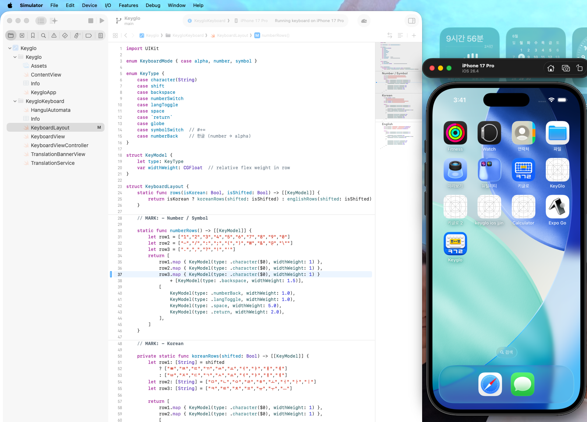

Problems that translation apps have not solved
I came to the U.S. from Korea when I was 17. I had been an athlete my whole life, so it was my first time seriously studying.
I caught up quickly. I learned English and kept up with classes. But there was one problem that remained: writing. Writing in English was not impossible. It was just that when I write, I always think in Korean first.
No matter what translator I used, the result was always stiff and awkward. My tone and nuance never came through. Anyone who has lived between two languages would sympathize.
Currently, only about 25% of the world's internet users are native English speakers. The remaining 75% use tools still designed around native English speakers. This disconnect was exactly what I felt every day.
So I made KeyGlo. It's an iOS keyboard that turns my Korean typing into English in my own voice.
The reality of making it by yourself
I am an economics major. I learned coding by myself. No co-founders, no bootcamp — just me doing PM, design, and development alone.
It was a lot harder than I expected. Korean consonants typed back-to-back weren't being recognized. Inside keyboard extensions, backspace worked differently than in normal apps. Profanity filtering took a lot longer than I thought.
At first, I used the Claude API. The quality was good, but the cost was the issue. After testing several alternatives, I switched to Gemini 2.5 Flash. The cost was about 10 times cheaper, and the translation performance was similar. The choice was not difficult.
Every technical decision had to be mine. Every design choice had to be mine. Every decision about what to build and what to skip had to be mine. That's isolating, but it's also clarifying.
What I really learned
I didn't make it to make money. I made it because I needed it and no one else had made it.
The biggest thing I learned was not technology. One person can take charge of the entire product. One person can do PM, design, and development on their own. That's not something you learn in a classroom. You have to launch it yourself to find out.

KeyGlo — Korean-English Translation Keyboard
Most importantly, I learned that you don't need permission to build something. You don't need a team, a co-founder, or a degree in computer science. You just need a problem you care about solving and the willingness to spend the time figuring it out.